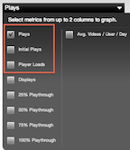

Ooyala Player usage is subdivided by events for displays, plays, and plays starts.
|

|
Plays = Play Events Initial Plays = Play Start Events Player Loads = Display Events |
Displays measure the number of times that a piece of video content is loaded and displayed within the player before it gets played (displays are related to each individual asset). Each time an embed code is changed, this event gets triggered by the Ooyala Player event CONTENT_TREE_FETCHED, as noted in Player V3 Message Bus Events (Deprecated).
Loading the player does not necessarily mean a video will be played, only that player has loaded. Some scenarios in which display events are generated but there is no play include the following:
No video autoplay, and the consumer does not click “play.”
Autoplay enabled, but consumer abandons page before player has time to start playing.
Similarly, a single display event (or player load) can result in multiple video plays, for example if multiple videos in a playlist are viewed consecutively within the same player instance.
A play event measures the number of times that the "Play" button is triggered either manually or automatically. The requested content could be ad content or the actual video content (a play is counted regardless of which type of content is requested to play). Plays currently don’t include the Replay event.
This is triggered by the Ooyala Player event WILL_PLAY_FROM_BEGINNING, as noted in Player V3 Message Bus Events (Deprecated).
No distinction is made between pre-roll ads and the actual video asset itself. Either constitutes a "play."
A "play start" event measures the number of times that actual non-ad video content starts playing. If the user initiates the playback experience and only watches a pre-roll ad without continuing on to the actual video content, a Play count is reported, but not a Start. Play Starts is only recorded if the user waits until the actual video starts playing back.
This is triggered by the Ooyala Player event PLAYHEAD_TIME_CHANGED, as noted in Player V3 Message Bus Events (Deprecated).